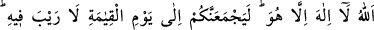
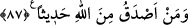

Efendimiz’i vasfetmek ve övmek ben âcize nasıl layık olur?
Onu vasfetmeye âlemin yaratıcısı kâfîdir (onu o vasfetmiştir)
Bütün nebîler senin övülmene hayran oldular
Sır ehli veliler de buna şaşırıp kaldılar
Hayır veyâ şer olan “Bir selam ile selamlandığınız zaman, siz de ondan daha güzeli
ile selamlayın.” Hayır ise ondan daha güzel hayırla, şer ise yumuşaklıkla, affederek
yâhut hayırla karşılık vererek selamlayın. “Yâhut aynı ile karşılık verin.” Yâni güzel
selam verene güzel, kötü selam verene de kötü selam ile karşılık verin. Allah’ın: “Bir
kötülüğün karşılığı ona denk başka bir kötülüktür.” (eş-Şûrâ, 42/40) ve
“Affetmeniz, takvâya daha yakındır” (el-Bakara, 2/237) âyetleri de buna delâlet eder.
“Sen af yolunu tut, iyiliği emret ve câhillerden yüz çevir.” (el-A’râf, 7/199) âyetinin
tefsîrinde Peygamber Efendimiz (a.s) Cebrail vasıtasıyla Allah Teâlâ’dan naklen şöyle
buyuruyor: “Sana zulmedeni affedersin, seninle alakasını kesen ile akrabalığı devam
ettirirsin, seni mahrûm bırakana verirsin.”[101]
“Şüphesiz Allah” af ve iyilik gibi “her şeyin hesâbını arayandır.” Bu bakımdan
“Kim zerre kadar hayır işlerse onu görür, kim de zerre kadar şer işlerse onu
görür.” (ez-Zilzâl, 99/7-8) Bu kısım, “et-Te’vîlâtü’n-Necmiyye”den alınmıştır.
87- Allah –ki O’ndan başka tanrı yoktur- elbette sizi kıyâmet günü toplayacaktır,
bunda aslâ şüphe yoktur. Allah’tan daha doğru sözlü kim olabilir?
“Allah -ki O’ndan başka tanrı yoktur-” Ne yerde ne gökte O’ndan başka ilah yoktur.
Allah’a yemîn olsun “elbette sizi kıyâmet günü”nün hesâbı için kabirlerinizden çıkarıp
“toplayacaktır.” “Kıyâmet”, kıyam yâni “kalkmak” mânâsınadır. Sonundaki “te” harfi
ise o gün olacak korkunun ne kadar şiddetli olduğunu mübâlağa ile ifâde etmek içindir.
“Bunda aslâ şüphe yoktur.” Yâni, o günde hiç şüphe yoktur. Mutlaka olacaktır. Yâhut
da sizi kıyamet günü toplamasında aslâ şüphe yoktur.
“Allah’tan daha doğru sözlü kim olabilir?” Bu ifâde, Allah’tan daha doğru sözlü
birinin olabileceğini inkar etmektedir. Çünkü onun verdiği habere hiç bir şekilde yalan
arız olmaz. Çünkü bu bir eksikliktir. Eksiklik ise O’ndan başkaları bir tarafa, Allah için
muhaldir. Hadîs-i kudsîde şöyle geçmektedir:
“Âdemoğlu beni yalanladı”. Beni yalan söylemekle suçladı. “Bu ona yakışmaz.”
Yâni, yalan isnâd etmek ona uygun düşmez. Bu bir hatadır. “Beni yerdi.” Yermek
mânasındaki “şetm”, başkasını onda noksanlık ve değersizlikle vasfetmek demektir.
“Bu da ona yakışmaz. Beni yalanlamasına gelince bu “Beni başlangıçta yarattığı